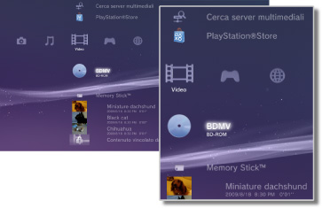

Video > Categoria Video
Categoria Video
Sotto  (Video) sono visualizzate le seguenti icone. Le icone visualizzate variano in base alle condizioni di utilizzo.
(Video) sono visualizzate le seguenti icone. Le icone visualizzate variano in base alle condizioni di utilizzo.

 |
Utilità dei dati dei BD | I dati amministrativi utilizzati da Blu-ray Disc™ (BD) sono stati salvati. |
|---|---|---|
 |
Cerca server multimediali | Consente di avviare la ricerca di server multimediali DLNA connessi alla stessa rete. |
 |
Server multimediale | Consente di connettersi ai server multimediali DLNA e riprodurre i file video memorizzati. L'icona visualizzata dipende dal tipo di server. |
 |
Editor e caricatore di video | Modificare il contenuto video che viene salvato nella memoria del sistema PS3™. |
 |
BD-ROM/BD-R/BD-RE | Riproducono un Blu-ray Disc(BD). |
 |
DVD-ROM / DVD-R / DVD+R / DVD-RW / DVD+RW | Riproducono un DVD o un disco AVCHD. |
 |
Disco di dati | Consente di riprodurre i file video salvati su dischi registrabili compatibili, ad esempio CD-R o DVD-R. |
 |
Memory Stick™ | Riproduce file video salvati su supporti Memory Stick™.* |
 |
SD Memory Card | Riproduce file video salvati su SD Memory Card.* |
 |
CompactFlash® | Riproduce file video salvati su CompactFlash®.* |
 |
PSP™ (PlayStation®Portable) | Riproduce file video salvati su supporti Memory Stick™ del sistema PSP™. |
 |
PSP™ (PlayStation®Portable) | Riproduce file video salvati nella memoria di sistema del sistema PSP™go. |
 |
Fotocamera digitale | Riproduce file video salvati su una fotocamera digitale compatibile con il sistema PS3™. |
 |
WALKMAN®/ATRAC Audio Device(WALKMAN®) | Consente di riprodurre file video salvati su un WALKMAN®/ATRAC Audio Device (WALKMAN®). |
 |
ATRAC Audio Device | Consente di riprodurre file video salvati su un ATRAC Audio Device. |
 |
Dispositivo USB | Riproduce file video salvati su un dispositivo di archiviazione USB. |
 |
Filmati fotocamera digitale | Riproduce file video salvati nella cartella DCIM del supporto di memorizzazione. |
|
(cartella) | Questa icona viene visualizzata per le cartelle create sul supporto di memorizzazione utilizzando un PC. |
 |
(file salvati nella memoria di sistema) | Riproduce file video salvati nella memoria di sistema del sistema PS3™. Vengono visualizzate immagini in miniatura. |
 |
(dati scaricati nella memoria di sistema) | Questa icona individua file video scaricati nella memoria di sistema. All'avvio, i dati vengono installati e il file video può essere riprodotto. |
| * |
Con alcuni modelli, per utilizzare supporti di memorizzazione è necessario disporre di un adattatore USB appropriato (non in dotazione). Quando utilizzato con un adattatore USB, il supporto di memorizzazione viene visualizzato come |
|---|
 (Dispositivo USB).
(Dispositivo USB).Note
- La vendita / noleggio di contenuto video da PlayStation®Store sul sistema PS3™ è stata interrotta.
- Per ulteriori informazioni sullo standard DLNA, vedere
 (Impostazioni) >
(Impostazioni) >  (Impostazioni di rete) > [Connessione al server multimediale] della presente guida.
(Impostazioni di rete) > [Connessione al server multimediale] della presente guida. - Affinché il sistema riproduca il contenuto protetto da copyright di un Blu-ray Disc a una risoluzione di 1080p, è necessario utilizzare un cavo HDMI per connettere il sistema a un dispositivo compatibile con lo standard HDCP (High-bandwidth Digital Content Protection).
- Le immagini in miniatura potrebbero non essere visualizzate per alcuni tipi di file video protetti da copyright.
- Quando si riproduce un BD con contenuto soggetto a restrizioni del filtro contenuti, la riproduzione sarà limitata in base al livello del filtro contenuti impostato nel sistema PS3™. Il livello del filtro contenuti dei BD può essere regolato sotto (Impostazioni) >
 (Impostazioni di sicurezza).
(Impostazioni di sicurezza). - Quando si riproduce un DVD con contenuto soggetto a restrizioni del filtro contenuti, potrebbe essere richiesta una password per riprodurre il contenuto. La password può essere configurata sotto (Impostazioni) > (Impostazioni di sicurezza).
- Il contenuto con restrizioni di Filtro contenuti è visualizzato come
 . È possibile abilitare la riproduzione di tale contenuto immettendo una password di 4 cifre. La password può essere impostata o modificata sotto (Impostazioni) > (Impostazioni di sicurezza).
. È possibile abilitare la riproduzione di tale contenuto immettendo una password di 4 cifre. La password può essere impostata o modificata sotto (Impostazioni) > (Impostazioni di sicurezza). - I dischi BD protetti sono visualizzati come
 . Per riprodurre il contenuto di questi dischi, immettere la password configurata dallo sviluppatore del disco.
. Per riprodurre il contenuto di questi dischi, immettere la password configurata dallo sviluppatore del disco. - In rari casi, i dischi e altri supporti potrebbero non funzionare correttamente quando riprodotti nel sistema PS3™. Tale problema è causato principalmente da variazioni del processo produttivo o della codifica del software.
- Se un dispositivo che non è compatibile con lo standard HDCP (High-bandwidth Digital Content Protection) viene collegato al sistema utilizzando un cavo HDMI, non è possibile emettere video e/o audio dal sistema.
Visualizzazione di contenuto 3D
Per la visualizzazione di contenuto 3D sono necessari un televisore compatibile con il 3D e conforme allo standard 3D e un cavo HDMI ad alta velocità.
Note
- A seconda del contenuto, durante la riproduzione di contenuto Blu-ray 3D™ la visualizzazione in 3D di alcuni elementi, come ad esempio menu e sottotitoli, potrebbe differire sul sistema PS3™ rispetto ad altri dispositivi di riproduzione.
- A seconda del contenuto, alcune funzionalità BD-J potrebbero non essere riprodotte in 3D o potrebbero non funzionare correttamente sul sistema PS3™.
- L'audio Dolby TrueHD non è supportato durante la riproduzione del contenuto Blu-ray 3D™. Al suo posto viene utilizzato il formato Dolby Digital.
Memorizzazione locale di Blu-ray Disc (BD)
Se durante la riproduzione di BD viene visualizzato un messaggio di errore indicante che lo spazio di memorizzazione locale è insufficiente, eliminare i file non necessari nella memoria di sistema per aumentare lo spazio libero.
La memorizzazione locale è un'area di memorizzazione di dati definita negli standard 1.1 / 2.0 del BD-ROM Profile. Questi dati sono archiviati nella memoria di sistema del sistema PS3™.